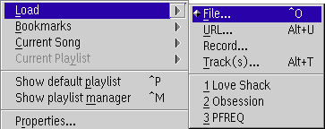
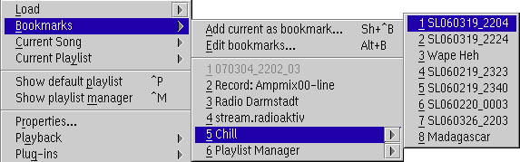
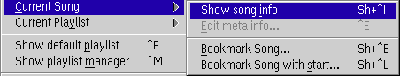
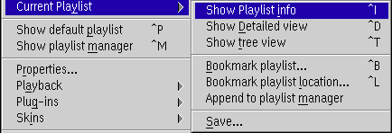
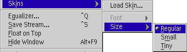

The main menu can be invoked by clicking the right
mousebutton or by pressing space over the main window.
The following menu will then pop up:
- Load...

Loads a single or multiple files, an URL from the Internet for streaming,
CD tracks or one from last used items.
- Bookmarks

- Add current as bookmark...
- Add the currently loaded file to your bookmarks.
- Edit Bookmarks...
- Open the current bookmarks in the playlist editor.
- more entries
- Load one of your bookmarks into the player.
As you see in the example you can navigate into playlist bookmarks.
If you click on a playlist entry without opening the sub menu then the entire playlist is loaded.
- Current song

- Show song info
- Show a dialog with informations to the current song.
- Edit file info...
- Edits the song info of the currently loaded file.
- Bookmark song...
- Add the currently loaded file to your bookmarks.
- Bookmark song with start...
- Add the currently loaded file to your bookmarks
and store the current playing position also.
- Current playlist

- Show playlist info
- Show a dialog with informations to the current playlist.
- Show detailed view
- Opens the currently loaded playlist in the playlist editor.
- Show tree view
- Opens the currently loaded playlist in the playlist manager view.
- Bookmark playlist...
- Add the currently loaded playlist to your bookmarks.
- Bookmark playlist with location...
- Add the currently loaded playlist to your bookmarks
and store the currently playing song and position also.
- Save...
- Save the currently loaded playlist.
- Show default playlist
Shows the default playlist window.
- Show playlist Manager
Shows the Playlist Manager.
- Properties...
Displays PM123's Configuration dialog.
- Playback
Controls playing process. This is self-explanatory
- Plug-ins
Gives easy access to the plug-ins' configuration dialogs. Checked plug-ins are enabled or activated.
- Skins

- Load Skin...
- Load a new skin into the player.
- Font
- A submenu which allows you to select from two fonts.
This is disabled if you are not using skinned fonts.
- Size
- A submenu which allows you to select the size of the player from 3 predefined sizes.
- Equalizer...
Displays the Graphical Equalizer.
- Save Stream
Save the uncompressed stream from the decoder plug-in. This allows you to save internet streams.
- Float on top
Toggles 'float on top' option, which allows PM123 to float above all windows.
- Hide window
Hides the player window. PM123 can be restored by selecting it from the window list.